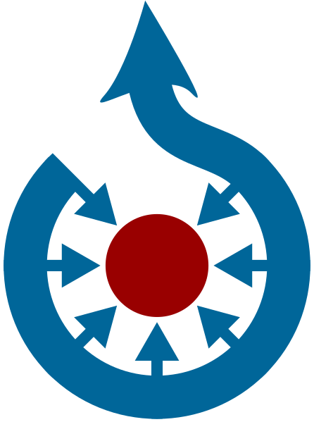

<!DOCTYPE html>
<html>
<head>

	<title>WLE Latvia</title>

	<meta charset="utf-8" />
	<script src="https://tools-static.wmflabs.org/cdnjs/ajax/libs/jquery/3.3.1/jquery.min.js"></script>
	<meta name="viewport" content="width=device-width, initial-scale=1.0">

	<link rel="stylesheet" href="https://tools-static.wmflabs.org/cdnjs/ajax/libs/leaflet/1.3.1/leaflet.css"></link>
	<script src="https://tools-static.wmflabs.org/cdnjs/ajax/libs/leaflet/1.3.1/leaflet.js"></script>
	<style>
		html, body {
			height: 100%;
			margin: 0;
		}
		#map {
			height: 100%;
		}
	</style>
</head>
<body>
	<div id="map"></div>
<!--<button id="gome">Go to me</button>-->
	<script>
//

function escattr ( s ) {
	return s.replace(/&/g,'&amp;').replace(/</g,'&lt;').replace(/>/g,'&gt;').replace(/"/g,'&quot;').replace(/'/g,'&#x27;').replace(/\//g,'&#x2F;') ;
}
//decodeURIComponent(
function createImageThumbnail ( image,size ) {
	image = image.replace("http://commons.wikimedia.org/wiki/Special:FilePath/",  "");
	var url = 'https://commons.wikimedia.org/wiki/Special:Redirect/file/'+image+'?width='+size+'px&height='+size+'px' ;
		var h = '' ;
		h += "<div class='thumb'>" ;
		h += "<a target='_blank' href='https://commons.wikimedia.org/wiki/File:" + image + "'>" ;
		h += "" ;
		h += "</a></div>" ;
		h += "<span class='smallimgname'>" + decodeURIComponent(image) + "</span>" ;
		return h ;
}

function create_popup(data) {
	//["item","itemLabel","coords","image","comcat","web","sitelink","sastavno1"]
	//vēl vajag tipu!!!
	var aaa = [];
	
	aaa.push('<b>' +data.itemLabel.value + '</b>');
	
	if (data.image)
		aaa.push(createImageThumbnail ( data.image.value,'200' ));
	
	if (data.sitelink)
		aaa.push(' <a href="'+data.sitelink.value+'">Raksts Vikipēdijā</a>');
	
	if (data.sastavno1)
		aaa.push('Galvenais objekts: <a href="'+data.sastavno1.value+'">'+decodeURIComponent(data.sastavno1.value.replace('https://lv.wikipedia.org/wiki/',''))+'</a>');
	
	aaa.push(' <a href="'+data.item.value+'">Vikidatu vienums</a>');
	
	
	//c:Category:High-resolution_or_SVG_official_Wikimedia_logos
	if (data.comcat)
		aaa.push(' <a href="https://commons.wikimedia.org/wiki/Category:'+encodeURIComponent(data.comcat.value)+'">Attēlu galerija</a>');
	
	if (data.web)
		aaa.push('<a href="'+data.web.value+'">Mājaslapa</a>');
	//
	return aaa.join('<br>');
	
	
}
//
$.getJSON('query(2).json', function(list) {
	var one = L.layerGroup();
	var two = L.layerGroup();
	
	var stats = {
		"totalCount": 0,
		"imageCount": 0
	};
	var color = ['red', 'yellow', 'green'];
	var pointlayers = ['one', 'two', 'three'];
	for (var i = 0; i < list.results.bindings.length; i++) {
		var colorNumber = 0;
		var popupContent = "<b>" + list.results.bindings[i].itemLabel.value + "</b>";
		stats["totalCount"]++;
		if (list.results.bindings[i].image) {
			stats["imageCount"]++;
			colorNumber++;
			addTogroup = one;
		} else {
			addTogroup = two;
		}
		
		popupContent = create_popup(list.results.bindings[i]);
		if (list.results.bindings[i].coords) {
			stats["coordinateCount"]++;
			var coordText = list.results.bindings[i].coords.value.split('(');
			var latlngText = coordText[1].split(' ');
			var lng = latlngText[0];
			var lngText = latlngText[1];
			var lat = lngText.substring(0, lngText.length - 1);
			var latlng = L.latLng(lat, lng);
			var marker = L.circleMarker(latlng, {
				radius: 7.5,
				color: 'black',
				fillOpacity: 1,
				fillColor: color[colorNumber]
			}).bindPopup(popupContent).addTo(addTogroup);
		}
	}
	
	
	

	/*
	L.marker([39.61, -105.02]).bindPopup('This is Littleton, CO.').addTo(one),
	L.marker([39.74, -104.99]).bindPopup('This is Denver, CO.').addTo(one),
	L.marker([39.73, -104.8]).bindPopup('This is Aurora, CO.').addTo(one),
	L.marker([39.77, -105.23]).bindPopup('This is Golden, CO.').addTo(one);
	*/
	
	var mbAttr = 'Map data &copy; <a href="http://openstreetmap.org">OpenStreetMap</a> contributors, ' +
		'<a href="http://creativecommons.org/licenses/by-sa/2.0/">CC-BY-SA</a>, ' +
		'Imagery © <a href="http://mapbox.com">Mapbox</a>',
		mbUrl = 'https://api.tiles.mapbox.com/v4/{id}/{z}/{x}/{y}.png?access_token=pk.eyJ1IjoibWFwYm94IiwiYSI6ImNpejY4NXVycTA2emYycXBndHRqcmZ3N3gifQ.rJcFIG214AriISLbB6B5aw';

	var grayscale = L.tileLayer(mbUrl, {
			id: 'mapbox.light',
			attribution: mbAttr
		}),
		streets = L.tileLayer(mbUrl, {
			id: 'mapbox.streets',
			attribution: mbAttr
		});

	var map = L.map('map', {
		center: [56.9, 24],
		zoom: 8,
		layers: [streets, one, two]
	});


	var baseLayers = {
		"Melnbaltā": grayscale,
		"Krāsainā": streets
	};

	var overlays = {
		'<span style="display:inline-block; width:1.5em; height:1em; margin:1px 0; border:1px solid black; background-color:yellow;"></span> Ir attēls': one,
		'<span style="display:inline-block; width:1.5em; height:1em; margin:1px 0; border:1px solid black; background-color:red;"></span> Nav attēla': two
	};
	L.control.layers(baseLayers, overlays).addTo(map);
	
	
function my_loc() {
    if (navigator.geolocation) {
        navigator.geolocation.getCurrentPosition(showPosition);
    } else {
        x.innerHTML = "Geolocation is not supported by this browser.";
    }
}


function showPosition(position) {
	L.circleMarker([position.coords.latitude, position.coords.longitude], {
				radius: 5,
				color: 'pink',
				fillOpacity: 1,
				fillColor: 'pink'
			}).bindPopup('my hauz').addTo(map)
}
	
//my_loc();
});
</script>
</body>
</html>
